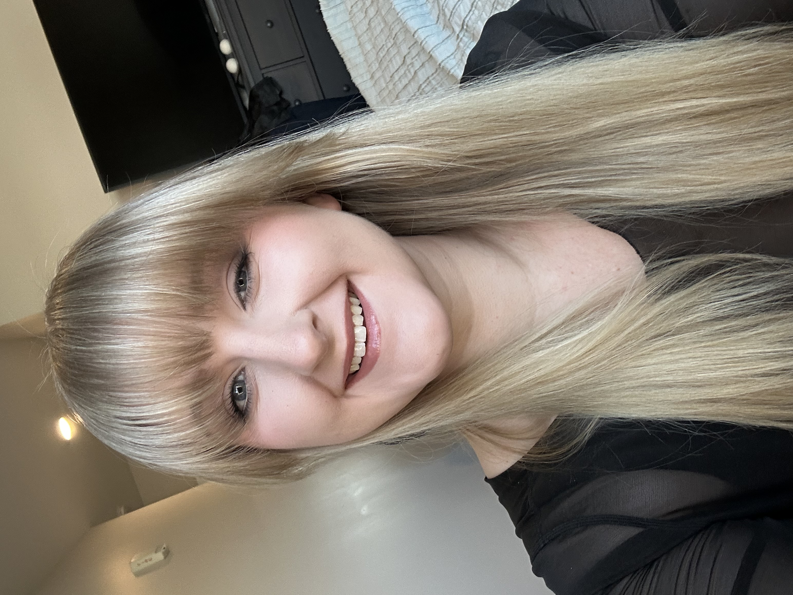

About Me

My name is Ariel and I am a Full-time student graduating in December 2026 and seeking a career in business mangement and marketing. I am available part-time immediately and full-time in January 2027. I am studying Web Design and Web Programing at Anoka Ramsey Community College. This is a website I created to showcase as a portfolio of my skills.
I have taken the following classes at Anoka Ramsey Community College:
- Developing Web Pages, where I learned HTML and CSS
- Computer Science and Information Systems
- Entrepreneurship
Next semester I plan on taking Computer Concepts and Applications, Database Management Using Microsoft Access, and Internet Essentials. I also plan on taking business marketing courses to further help develop and grow a small business.
I am developing and working on starting my own small business called Ariel Marie Treasures. I would love to design digital cross-stitch patterns for crafters to stitch all around the world. I hope this business also grows into me creatign cross-stitch kits for those starting out to have an easy entry into the craft. I will create YouTube videos to help people understand and learn how to cross-stitch.
These videos will include:
- How to start a cross-stitch project
- How to finish a cross-stitch project
- Different types of fabric that can be used
- Why are there so many different needle sizes
- Different types of hoops
My hobbies include reading, cross-stitching, and video gaming.